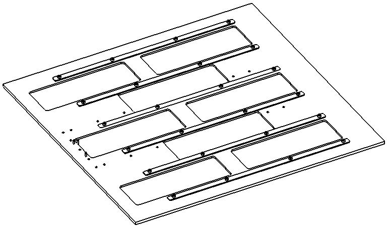
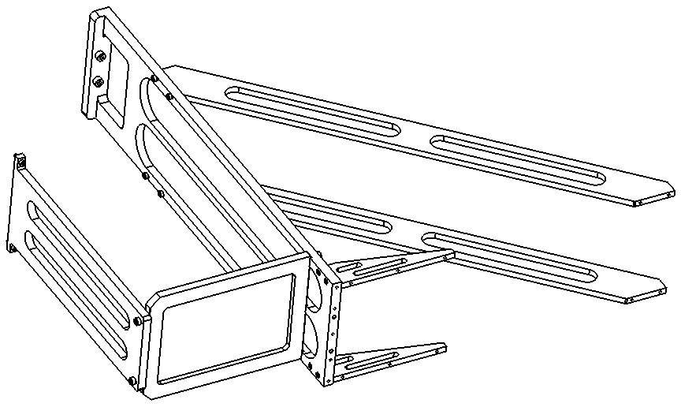
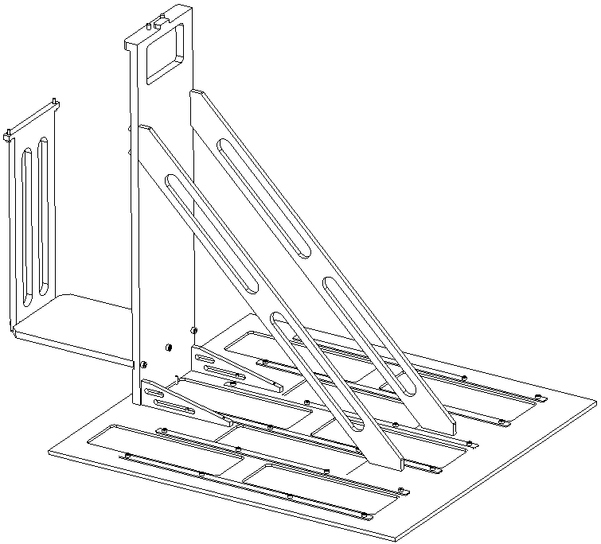
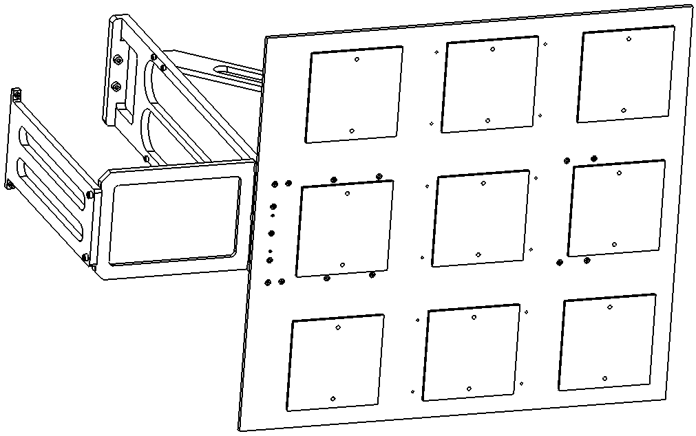

1 传感器驱动及外设
1.1 传感器与电机驱动启动
机器人全部传感器（深度相机、激光雷达、IMU）与底盘电机驱动由同一脚本统一启动，无需分别单独启动。
⚠ 启动前请确认急停已释放、设备处于正常上电状态。
打开新终端，执行：
cd ~/konka/navigation/scripts
./1_nav_drive.sh检查驱动终端的运行日志，并验证下列话题持续输出数据。
启动完成后，可通过以下命令分别确认数据：
- 深度相机：ros2 topic hz /camera/color/image_raw（详见技术手册 第 1.2 节）
- 激光雷达：ros2 topic hz /scan（详见技术手册 第 1.3 节）
- 电机状态：ros2 topic echo /motorFbk_topic（详见技术手册 第 1.4 节）
1.2 深度相机使用指南
相机通过 USB 3.0 Type-C 连接，使用 gemini_330_series.launch.py 驱动。
1.2.1 相机简介
Gemini 336L 是一款主动双目 + 被动立体视觉融合的 3D 相机，主要规格如下：
| 项目 | 参数 |
|---|---|
| 深度分辨率 | 最高 1280×800 @30 fps |
| RGB 分辨率 | 最高 1280×800 @60fps，全局快门 |
| 深度量程 | 最佳 0.25~6 m（最远 20 m+），2 m 处精度 ≤0.8% |
| 视场角 | 90° × 65° |
| 传感器 | 双目 IR + 散斑投射 + RGB + 6 轴 IMU + 激光测距 |
| 接口 | USB 3.0 Type-C，IP65 防护 |
| USB ID | 2bc5:0807 |
ROS2 驱动启动后会自动输出：彩色图、深度图、点云、红外图、IMU 及 TF 变换。
1.2.2 查看数据
话题列表
ros2 topic list正常应包含以下话题：
| 话题 | 说明 |
|---|---|
| /camera/color/image_raw | RGB 图像（sensor_msgs/Image） |
| /camera/color/camera_info | RGB 内参 |
| /camera/depth/image_raw | 深度图（单位：mm） |
| /camera/depth/camera_info | 深度相机内参 |
| /camera/depth/points | 点云（PointCloud2，默认开启） |
| /camera/left_ir/image_raw | 左红外图 |
| /camera/right_ir/image_raw | 右红外图（部分固件） |
| /camera/imu | IMU 数据 |
| /diagnostics | 温度等诊断信息 |
| /tf、/tf_static | 相机坐标系变换 |
命令行验证
# 频率检查（RGB 默认 30fps，深度 30fps）
ros2 topic hz /camera/color/image_raw
ros2 topic hz /camera/depth/image_raw
# 类型检查
ros2 topic info /camera/depth/points
# 查看当前深度分辨率
ros2 topic echo /camera/depth/camera_info --once
# 查看彩色图的 frame_id（RViz 里要用）
ros2 topic echo /camera/color/image_raw --once | grep frame_id
# 服务：获取 SDK 版本
ros2 service call /camera/get_sdk_version orbbec_camera_msgs/srv/GetString '{}'
# 参数
ros2 param list /camera图像可视化
# 方式一：rqt_image_view（可下拉切换所有图像话题）
ros2 run rqt_image_view rqt_image_view
# 方式二：RViz2 同时看图像和点云
rviz2RViz2 配置步骤：
- Global Options → Fixed Frame 填 camera_link
- Add → By topic → /camera/color/image_raw → Image：查看 RGB
- Add → By topic → /camera/depth/image_raw → Image：查看深度图（DepthMap 配色）
- Add → By topic → /camera/depth/points → PointCloud2：查看 3D 点云（Style 选 Points，Size 设 0.005）
- TF 插件可查看相机各坐标系关系
1.2.3 关键启动参数
自定义相机启动参数如下。
| 参数 | 默认值 | 说明 |
|---|---|---|
| color_width/height/fps | 1280/800/30 | RGB 分辨率帧率 |
| depth_width/height/fps | 1280/800/30 | 深度分辨率帧率（带宽紧张可改 848×480） |
| enable_point_cloud | true | 是否发布点云 |
| enable_colored_point_cloud | false | 发布彩色点云（更耗资源） |
| enable_ir | true | 红外图 |
| enable_imu | true | IMU 数据 |
| serial_number | 空 | 多相机时指定 SN |
| depth_registration | true | 深度对齐到彩色坐标系 |
| camera_name | camera | 话题前缀 |
| depth_work_mode | — | 深度工作模式（官方文档有多种预设） |
1.2.4 常见问题排查
| 现象 | 原因 | 解决办法 |
|---|---|---|
| list_devices_node 找不到设备 | udev 规则没装/未生效 | 重新插拔相机，检查 udev 规则 |
| openUsbDevice failed 权限错误 | 设备节点权限不足 | 临时 sudo chmod 666 /dev/bus/usb/XXX/XXX |
| 图像卡顿、花屏、丢帧 | 插在了 USB2.0 口/带宽不足 | 换 USB3 口；降低分辨率帧率；加大 usbfs 内存 |
| RViz 全红 Global Status: Error | Fixed Frame 错误 | Fixed Frame 设置为实际图像或点云的 frame_id |
| RTAB-Map 等算法收不到图像 | QoS 不匹配 | 算法侧加 qos:=2（BEST_EFFORT） |
| 深度图全是 0 | 距离超出量程或强反光 | 目标放在 0.25~6 m 内测试 |
1.3 激光雷达使用指南
雷达数据发布到 /scan，消息类型为 sensor_msgs/msg/LaserScan。
1.3.1 命令行查看数据
雷达驱动启动后，数据发布在 /scan 话题上。
# 确认 /scan 话题存在
ros2 topic list
# 查看发布频率（A1 通常约 5~10 Hz）
ros2 topic hz /scan
# 逐条打印原始数据
ros2 topic echo /scan/scan（LaserScan）消息字段说明：
| 字段 | 说明 |
|---|---|
| angle_min / angle_max | 扫描起始/结束角度（A1 是 -3.14 ~ +3.14 弧度，360°） |
| angle_increment | 相邻两束激光的角度步长 |
| range_min / range_max | 量程范围（A1 约 0.15 ~ 12 m） |
| ranges[] | 每个角度的距离（米），数组长度 = 全角度束数 |
| intensities[] | 反射强度，A1 此功能较弱 |
1.3.2 RViz 可视化
rviz2在 RViz 中依次配置：
- Fixed Frame：填雷达的 frame_id（默认是 laser，以启动参数里设置的为准）
- 点击左下角 Add → 添加 LaserScan 插件
- 在 LaserScan 的 Topic 下拉框中选择 /scan
出现 frame does not exist 时，将 RViz 的 Fixed Frame 设置为雷达实际 frame_id。需要在底盘坐标系显示时，加载机器人标定得到的 TF 变换。
也可直接使用驱动自带的带 RViz 的 launch 文件：
ros2 launch rplidar_ros view_rplidar_a1_launch.py1.3.3 Python 脚本读取数据
保存为 check_scan.py：
import rclpy
from rclpy.node import Node
from sensor_msgs.msg import LaserScan
class Check(Node):
def __init__(self):
super().__init__('check_scan')
self.create_subscription(LaserScan, 'scan', self.cb, 10)
def cb(self, msg):
valid = [r for r in msg.ranges if msg.range_min < r < msg.range_max]
if valid:
self.get_logger().info(
f'有效点数: {len(valid)}/{len(msg.ranges)} 最近距离: {min(valid):.2f} m'
)
else:
self.get_logger().warn('无有效数据!')
rclpy.init()
rclpy.spin(Check())1.3.4 常见问题排查
| 现象 | 可能原因 | 解决办法 |
|---|---|---|
| ros2 topic hz /scan 无输出 | 驱动没跑起来 | 检查串口名、权限、波特率（A1 为 115200） |
| /scan 有数据但全是 inf | 雷达前方空旷或超出量程 | 在雷达前方 0.5 m 处放一块障碍物再测 |
| RViz 显示 Global Status: Error | Fixed Frame 填错，或 TF 缺失 | Fixed Frame 设置为实际雷达 frame_id，并加载机器人 TF |
| 数据时断时续 | USB 供电不稳 | 换 USB 口，或外接供电 |
1.3.5 最快验证流程
- ros2 topic hz /scan —— 确认话题在发布
- 拿一块板子挡在雷达前方
- ros2 topic echo /scan —— 看 ranges 中对应方向出现小数值
- 打开 RViz —— 看到点云图像
1.4 电机驱动使用方法
1.4.1 通信机制
电机协议层接口采用 ROS2 话题通信机制（V1.0）。
1.4.2 运动指令话题
话题名称：/motorDrive_topic
功能：接收电机运动命令。
消息类型中 string[] joint 和 int32[] mode 为必填项。joint 是需要运动的关节名称，和 URDF 对应。所支持的关节名称如下：
| 关节名称 | 说明 |
|---|---|
| wrist_yaw_joint | 腕部偏航关节 |
| wrist_pitch_joint | 腕部俯仰关节 |
| wrist_roll_joint | 腕部横滚关节 |
| gripper_joint | 夹爪关节 |
| head_yaw_joint | 头部偏航关节 |
| head_pitch_joint | 头部俯仰关节 |
| head_camera_yaw_joint | 头部相机偏航关节 |
| head_camera_pitch_joint | 头部相机俯仰关节 |
| right_wheel_joint | 右轮关节 |
| left_wheel_joint | 左轮关节 |
| arm_lift_joint | 升降臂关节 |
| arm_joint | 臂关节 |
| arm_yaw_joint | 臂偏航关节 |
| none | 特殊关节（不产生运动，用于通信测试） |
⚠ 当关节名称为 none 时，不会产生运动。可用于通信测试，或方便将电机命令中的某一个关节去掉。
int32[] mode 为电机控制模式，规定如下：
ROS 2 协议层支持模式 1、2、3、4；SDK 的 SendMotorControl 支持模式 1、3、4。
| 模式值 | 说明 |
|---|---|
| 1 | 绝对位置模式（相对零位的运动距离） |
| 2 | 相对位置模式（相对当前位置的运动距离） |
| 3 | 速度模式（以指定速度持续运动，需要上位机自行判断何时停止） |
| 4 | 搜零（仅对升降臂有用） |
float64[] pos 和 float64[] vel 分别为关节的位置和速度，运动单位如下：
| 关节类型 | 位置单位 | 速度单位 |
|---|---|---|
| 旋转关节 | rad | rad/s |
| 直线关节 | m | m/s |
⚠ 这是关节运动模式而不是电机类型，旋转电机带动关节进行直线运动的属于直线关节。
1.4.3 启动方法
konka1_base 下存在名为 comm_nodes 功能包，运行该功能包的同名节点，进程提示"打开串口 xxx"即可：
cd path_to_konka1_base
source install/setup.bash
ros2 run comm_nodes comm_nodes1.4.4 发布命令
joint、mode、pos、vel 数组按同一关节顺序填写。
msg = MotorDrive()
msg.joint = ['none']
msg.pos = [0.0]
msg.vel = [0.0]
msg.mode = [1]
publisher.publish(msg)none 用于通信测试，不驱动关节运动。
1.4.5 状态反馈话题
话题名称：/motorFbk_topic
功能：固定频率发布所有电机状态。其中 header 包含了时间戳信息。
1.4.6 状态查询服务
服务名称：/motorFbk_service
功能：提供查询电机状态的服务，暂不启用。
1.4.7 注意事项
- 部分关节电机不完全支持上述模式，当控制模式和硬件不符时，电机不会运动，并返回警告。
- 当命令位置超出关节限制时，所有电机都不再运动，并返回警告。
- 升降臂（arm_lift_joint）需要靠底部的光电传感器进行标零，每次断电后，需要使用模式 4 进行搜零。可以通过重启协议层自动进行搜零。
2 决策与感知模块
2.1 决策模块使用说明书
适用交付包：brain-planner-v2
2.1.1 概述
决策模块运行时需要依次启动以下三个程序：
| 启动顺序 | 程序 | 启动脚本 | 作用 |
|---|---|---|---|
| 1 | 特征计算服务 | model_embedding_service/start_embedding_services.sh | 加载感知所需的特征模型，当前监听端口 8000 |
| 2 | 模型管理服务 | run_model_manage_service.sh | 管理并转发特征请求，当前监听端口 6001 |
| 3 | 决策模块 | run_brain_planner.sh | 启动机器人决策节点 |
项目目录：/home/chric/konka/decision/brain-planner-v2。
2.1.2 启动前配置
确认配置文件路径
决策模块使用的配置文件为：
brain-planner-v2/dev_ws/src/brain_planner/brain_planner/thirdpart/multimodal-agent/agent/config/config.yaml将 run_brain_planner.sh 中的 AGENT_CONFIG_PATH 设置为该配置文件的绝对路径。
确认运行条件
- decision_env 环境已经安装并可正常激活。
- 模型文件、install/ 目录及配置文件完整。
- GPU 可用，端口 8000 和 6001 未被其他程序占用。
- 使用云端模型时，机器人可以访问互联网，且 run_brain_planner.sh 已配置有效的 API Key。
- 使用 Rerun 场景展示时，机器人能够访问配置的 Rerun 服务地址。
2.1.3 启动方法
三个程序分别在独立终端中启动。每个终端均先激活 decision_env，并进入项目目录。
启动特征计算服务（终端 1）
conda activate decision_env
cd /home/chric/konka/decision/brain-planner-v2
bash model_embedding_service/start_embedding_services.sh该脚本在后台启动特征计算服务。可使用以下命令检查：
curl -s http://127.0.0.1:8000/health当前配置使用 YOLOE 特征模型。响应中的 models_status.yoloe 显示 initialized 后，再启动下一项服务。
启动模型管理服务（终端 2）
conda activate decision_env
cd /home/chric/konka/decision/brain-planner-v2
bash run_model_manage_service.sh保持该终端打开。终端显示模型管理服务已经启动并监听 6001 端口后，再启动决策模块。
启动决策模块（终端 3）
conda activate decision_env
cd /home/chric/konka/decision/brain-planner-v2
bash run_brain_planner.sh保持该终端打开。出现 robot_agent initialized 信息表示决策核心初始化完成。
2.1.4 停止与重启
统一停止
停止继续下发任务，等待机器人当前动作结束后，在新终端执行：
cd /home/chric/konka/decision/brain-planner-v2
bash kill_brain_planner.sh分模块停止
- 决策模块：在运行 run_brain_planner.sh 的终端按 Ctrl+C。
- 模型管理服务：在运行 run_model_manage_service.sh 的终端按 Ctrl+C。
- 特征计算服务：执行以下命令：
cd /home/chric/konka/decision/brain-planner-v2
bash model_embedding_service/stop_embedding_services.sh⚠ 停止决策进程不等同于机器人急停。机器人正在执行物理动作时，应按照整机安全操作要求停止执行机构。
2.1.5 关键参数配置
模型配置
打开 agent/config/config.yaml，找到 model_service 下的 chat_model：
| 参数 | 说明 |
|---|---|
| chat_model_url | 模型服务地址。使用阿里云百炼时保留交付地址；使用本地模型时填写本地 OpenAI 兼容服务地址 |
| chat_model_name | 决策实际调用的多模态模型名称，必须与服务端提供的模型标识完全一致 |
| use_local | false 表示使用云端服务及 API Key；true 表示使用本地模型服务 |
API Key 配置
API Key 不在 config.yaml 中，而是在 run_brain_planner.sh 中通过 DASHSCOPE_API_KEY 设置：
export DASHSCOPE_API_KEY="替换为实际获取的API_Key"Rerun 场景展示
Rerun 用于展示决策记忆中的增量场景点云。在 config.yaml 中修改以下参数：
| 参数 | 说明 |
|---|---|
| incremental_visual | true 开启场景展示并连接 Rerun 服务；false 关闭展示 |
| remote_host | Rerun 服务连接地址，格式为 rerun+http://IP:9876/proxy |
2.1.6 日志查看
所有日志命令均在 brain-planner-v2 项目目录中执行。
| 日志 | 位置 | 查看命令 |
|---|---|---|
| 决策详细日志 | log/agent.log | tail -n 100 log/agent.log 或 tail -f log/agent.log |
| 特征计算服务日志 | model_embedding_service/logs/ | tail -f model_embedding_service/logs/gpu_0_port_8000.log |
| 模型管理服务日志 | 启动终端 | 直接显示在 run_model_manage_service.sh 终端 |
2.1.7 常见问题
| 问题 | 处理方法 |
|---|---|
| 决策启动时提示配置文件不存在 | 检查 run_brain_planner.sh 中的 AGENT_CONFIG_PATH 是否为现场实际路径 |
| 特征服务进程已建立，但后续服务不可用 | 等待模型加载，并确认 /health 中 models_status.yoloe 为 initialized |
| 模型管理服务连接失败 | 检查 8000 服务状态、new_models.json 配置及启动终端错误 |
| 决策无法访问特征服务 | 检查 emb_model_url 是否为模型管理服务的 6001 地址 |
| 云端模型调用失败 | 检查网络、API Key、chat_model_url、模型名称和账号权限 |
| Rerun 没有画面 | 检查展示开关、Rerun 服务、IP、9876 端口和决策日志 |
| 修改配置后未生效 | 确认修改的是 AGENT_CONFIG_PATH 指向的文件，并完整重启决策模块 |
| 停止后端口仍被占用 | 执行 kill_brain_planner.sh，确认三个程序的 PID 记录均已清理 |
2.2 决策模块使用说明书（Flash版本）
2.2.1 概述
Flash 版本采用逐步规划方式执行机器人任务。收到任务后，系统根据已录入的场景位置、实时感知画面和动作执行结果，持续规划下一步操作，直至任务完成或终止。
Flash 决策包：brain-planner-v2-flash；规划模块：multimodal-agent-flash。
2.2.2 运行组成
| 启动顺序 | 程序 | 启动方式 | 作用 |
|---|---|---|---|
| 1 | 特征计算服务 | model_embedding_service/start_embedding_services.sh | 为配套感知服务能力 |
| 2 | 模型管理服务 | run_model_manage_service.sh | 管理并转发配套特征请求 |
| 3 | 本地定位服务 | 按现场交付方式启动 | 为抓取目标和放置点提供图像定位 |
| 4 | Flash 决策模块 | run_brain_planner.sh | 接收任务、生成规划、驱动机器人执行 |
2.2.3 大物体位置录入
Flash 版本执行搬运任务前，需要先录入机器人可以到达的固定位置，例如桌子、茶几、沙发、床头柜和垃圾桶。
录入前准备
- 确认感知模块正在持续输出有效场景信息。
- 将机器人移动到适合观察和操作目标位置的安全位姿。
- 保证目标区域无遮挡，机器人后续能够再次到达该位姿。
- 使用清晰且稳定的名称；任务指令中的位置名称应与录入名称一致。
录入操作
在 Flash 决策模块运行终端输入 mem，根据提示输入大物体名称（如"黑色桌子"）。机器人到位且感知画面稳定后，直接按一次回车，记录当前位姿。完成该位置的录入后输入 q。重复以上步骤录入所有位置。
查看已录入位置
在运行终端输入 objs，终端和 log/agent.log 将显示已录入的大物体名称。
2.2.4 任务使用
完成位置录入后，可通过整机语音交互下达任务。任务应同时说明待操作物体的来源位置和放置位置，例如："请把黑色桌子上的矿泉水瓶放到茶几上。"
当目标或位置存在歧义时，系统会通过语音追问。应在 feedback_timeout_sec 规定的时间内直接回答问题。需要取消当前任务时，只需唤醒语音后说明停止任务即可。
2.2.5 关键参数
大物体记忆
| 参数 | 说明 | 建议 |
|---|---|---|
| is_clear_mem | 启动时是否清空已录入的大物体位置 | 日常运行设置为 false；仅在需要重建全部位置时临时设为 true |
| mem_path | 大物体位置记录文件的保存路径 | 使用现场实际的绝对路径，并保证运行账号具有写入权限 |
任务控制
| 参数 | 说明 |
|---|---|
| max_task_steps | 单个任务允许的最大规划与执行步数 |
| feedback_timeout_sec | 系统追问后等待用户回答的秒数 |
| max_action_retry_times | 单个动作执行失败时允许的最大尝试次数 |
| max_clarify_rounds | 单个任务允许的最大追问次数 |
2.2.6 常见问题
| 问题 | 处理方法 |
|---|---|
| 启动时提示配置文件不存在 | 检查 AGENT_CONFIG_PATH 是否指向 Flash 版本的 config.yaml |
| 启动后不是 Flash 行为 | 确认 brain-planner-v2-flash 为 Flash 配套交付包，且加载路径为 multimodal-agent-flash |
| 输入 mem 后无法记录 | 确认决策进程在前台运行、感知模块正常启动、semantic_map 正在输出 |
| 重启后已录入位置消失 | 检查 is_clear_mem 是否为 false，以及 mem_path 文件是否存在并可读写 |
| 提示记忆中找不到位置 | 使用 objs 检查录入名称，并使用一致的位置名称重新下达任务 |
| 云端模型调用失败 | 检查网络、API Key、模型地址、模型名称和账号权限 |
| 抓取框或放置点定位失败 | 检查 locate_model_url、定位服务状态、网络和当前感知图像 |
2.3 感知模块使用说明书
适用交付包：konka_percept_second_bat_cython
2.3.1 概述
感知模块对机器人画面进行物体识别、轮廓分割和目标跟踪。模型及程序已经包含在交付包中，日常使用无需重新编译。
安装目录：/home/chric/konka/perception/konka_percept_second_bat_cython
| 文件 | 用途 |
|---|---|
| start_perception.sh | 启动感知服务 |
| server_config.yaml | 配置识别阈值、处理帧率、结果保存和服务端口 |
| logs/pipeline.log | 记录模型初始化、图像处理耗时和运行异常 |
2.3.2 启动前检查
- perception_env 环境已经安装并可正常激活。
- 相机及整机图像服务已经启动。
- GPU、模型文件和交付目录完整可用。
- 服务端口 50051 未被其他程序占用。
- server_config.yaml 中的消息大小已经填写为整数。
2.3.3 启动与运行检查
在机器人终端执行：
conda activate perception_env
cd /home/chric/konka/perception/konka_percept_second_bat_cython
bash start_perception.sh感知服务以前台方式运行，启动终端应保持打开。同一台机器人只启动一个实例。
判断是否启动完成：
| 终端或日志信息 | 含义 |
|---|---|
| Initializing Pipeline... | 模型和处理流程正在初始化，应继续等待 |
| gRPC Server listening on 50051 | 感知服务已经开始监听 50051 端口 |
| ROS Subscribed to ... | 已连接交付配置中的图像输入 |
| 持续出现 pre_time、infer_time、all_time | 正在持续接收并处理图像 |
2.3.4 停止与重启
在另一终端执行停止命令，或在启动终端按 Ctrl+C。随后检查服务是否已经退出：
pgrep -af 'run_konka_percept_server.py'命令没有输出表示服务已经停止。
⚠ 不要直接关闭终端后立即重复启动，以免旧进程继续占用 GPU 或 50051 端口。修改 server_config.yaml 后不支持运行中自动重新加载，需先停止再启动。
2.3.5 关键参数配置
识别阈值
| 参数 | 交付值 | 说明 |
|---|---|---|
| conf_threshold | 0.2 | 识别置信度下限（0~1）。提高后结果更严格，可减少误检，但可能增加漏检 |
| iou_threshold | 0.7 | 重叠框去重阈值（0~1）。降低后更积极地删除重叠框 |
处理帧率
target_fps 表示每秒接收图像的上限，并不保证实际处理速度一定达到该值。填写 0 表示不主动限制接收帧率。
显示与结果保存
| 参数 | 说明 |
|---|---|
| img_show | 是否在机器人本机显示实时识别画面。普通 SSH 环境应保持 false |
| img_save | 是否保存输入图像 |
| img_result_save | 是否保存带目标框和轮廓的结果图 |
| json_result_save | 是否保存结构化识别结果 |
调试结束后关闭图像与结果保存；普通 SSH 环境设置 img_show=false。
服务端口与消息大小
server_port 默认为 50051。消息大小参数（max_send_message_length 和 max_receive_message_length）必须填写整数（如 1048576），不能保留表达式。出现 RESOURCE_EXHAUSTED 时可调整为 16777216（16 MiB）。
2.3.6 日志查看
cd /home/chric/konka/perception/konka_percept_second_bat_cython
tail -n 100 logs/pipeline.log
tail -f logs/pipeline.log日志文件达到约 10 MiB 后自动轮换，最多保留 5 个历史文件。
2.3.7 常见问题
| 问题 | 处理方法 |
|---|---|
| 启动提示模块或环境不存在 | 确认已激活 perception_env，并从完整交付目录运行 start_perception.sh |
| 启动时出现消息长度类型错误 | 将两项消息大小改为整数，不能保留表达式 |
| 提示端口已经占用或服务已经运行 | 检查并停止旧进程，确认 50051 已释放后再启动 |
| 已监听端口但没有持续处理日志 | 检查相机及整机图像服务是否正常 |
| 持续处理但识别不到目标 | 检查光照、遮挡、目标类别及 conf_threshold 是否过高 |
| 误检或重复结果较多 | 逐项调整置信度和重叠框阈值 |
| 开启显示后报错 | 无图形桌面时关闭 img_show，使用 img_result_save 保存结果图 |
| 修改配置后没有变化 | 确认修改的是实际运行目录中的 server_config.yaml，完整停止并重新启动 |
2.4 语音模块使用说明书
适用交付包：sound_work_sdk_v2_cython
2.4.1 概述
语音模块提供唤醒、语音识别（ASR）和语音播报（TTS）功能。唤醒词检测在本地运行，语音识别和语音合成需要连接云端服务。机器人任务执行需配合决策及执行模块。
安装目录：/home/chric/Desktop/package_sound/sound_work_sdk_v2
2.4.2 启动与停止
启动前确认麦克风、扬声器工作正常，设备可访问云端服务，且两个启动脚本均已配置有效的 API Key。
在终端 1 中启动语音播报：
bash /home/chric/Desktop/package_sound/sound_work_sdk_v2/run_tts.sh在终端 2 中启动语音识别：
bash /home/chric/Desktop/package_sound/sound_work_sdk_v2/run_asr.sh脚本自动激活 audio_env 并加载运行环境。运行期间保持两个终端打开，同一脚本不要重复启动。
| 模块 | 启动完成标志 |
|---|---|
| 语音播报 | 终端显示 TTS Control Node started (service + direct topic) |
| 语音识别 | 终端显示 音频输入流已打开、等待唤醒词 |
2.4.3 功能检查
语音交互流程见语音与组合任务。
单独检查扬声器播报：
conda activate audio_env
source /home/chric/Desktop/package_sound/sound_work_sdk_v2/install/setup.bash
ros2 topic pub --once /brain/tts_play std_msgs/msg/String \
"data: '你好，我是贡嘎机器人'"2.4.4 参数配置
| 配置文件 | 配置内容 | 生效方式 |
|---|---|---|
| run_asr.sh | 安装路径、API Key、应答音色、收音阈值、录音时长 | 保存后重启 ASR |
| run_tts.sh | 安装路径、API Key、播报音色 | 保存后重启 TTS |
| audio_depends/model_files/keywords.txt | 唤醒词 | 保存后重启 ASR |
API Key 获取与配置
- 访问阿里云百炼控制台，注册并登录阿里云账号，按页面提示开通服务。
- 进入 API Key 管理页面，创建并复制 API Key。
- 分别打开 run_asr.sh 和 run_tts.sh，将 DASHSCOPE_API_KEY 替换为获取的 Key。
- 保存两个文件，分别重启 ASR 和 TTS。
主要参数说明
| 参数 | 配置位置 | 交付配置值 | 说明 |
|---|---|---|---|
| WORK_DIR | 两个启动脚本 | 安装目录路径 | 程序安装目录，两个脚本应保持一致 |
| DASHSCOPE_API_KEY | 两个启动脚本 | 已配置凭证 | 云端服务访问凭证 |
| VOICE | 两个启动脚本 | Cherry | 语音合成音色 |
| MIC_ENERGY_THRESHOLD | run_asr.sh | 0.0001 | 唤醒后判断有效语音的能量门槛 |
| MIC_VAD_THRESHOLD | run_asr.sh | 0.08 | 唤醒后语音短帧占比的判定门槛 |
| RECORD_MAX_SECONDS | run_asr.sh | 20 | 单次录音时长上限，单位秒 |
2.4.5 常见问题
| 问题 | 处理方法 |
|---|---|
| 启动提示"进入目录失败" | 检查两个脚本中的 WORK_DIR 是否与实际安装目录一致 |
| 找不到运行环境或 install/setup.bash | 联系维护人员检查预装环境及交付文件完整性 |
| 无法唤醒 | 确认 ASR 已就绪、唤醒检测已开启，检查默认麦克风并完整说出唤醒词 |
| 已唤醒但未识别到指令 | 应答结束后稍作停顿再说话；检查说话距离、等待开口时间及收音阈值 |
| 唤醒正常，语音识别失败 | 检查网络、API Key 和 ASR 终端错误；本地唤醒正常不代表云端服务可用 |
| 播报没有声音 | 确认 TTS 已启动，检查默认扬声器、系统音量、网络和 API Key |
| 修改音色后唤醒应答未变化 | 检查是否使用已有本地应答音频 |
| 播报触发了新的唤醒 | 将麦克风与扬声器适当隔离，必要时暂停唤醒检测 |
3 导航模块
导航脚本目录：~/konka/navigation/scripts。
3.1 建图与定位操作
开始导航前释放急停。
开始导航操作前，请先按第 1.1 节启动全部传感器与电机驱动，并确认各传感器数据正常。
如果场景不变，且已经完成过地图构建，可跳过建图步骤，直接执行重定位（见第 3.1.3 节）。
3.1.1 运行关节复位
打开新终端，执行：
cd ~/konka/navigation/scripts
./2_nav_head_cam_control.sh通过状态反馈及现场技术人员确认各关节已使能，尤其检查头部相机关节。复位及使能期间不要用手扳动或触碰关节进行验证。
3.1.2 建图
打开新终端，执行建图启动脚本：
cd ~/konka/navigation/scripts
./3_nav_split_start.sh再打开一个新窗口，运行键盘控制器，控制机器人扫描环境：
ros2 run teleop_twist_keyboard teleop_twist_keyboard键盘按键说明：I 前进、，后退、J 逆时针转、L 顺时针转。
⚠ 建图时速度控制在 0.1 m/s 为佳，过程中尽量避免原地自转。走慢、多停，每个房间都要走到，避免漏区域。
建图过程中可在 RViz 中观察地图与轨迹：
- 订阅 /map 查看 2D 栅格地图，检查墙线是否连续、有无重影。
- 订阅 /rtabmap/mapPath 和 /rtabmap/mapGraph 查看轨迹，回到起点时轨迹应闭合。
完成建图后，在建图终端按一次 Ctrl+C，让程序自动关闭并保存地图。
⚠ 保存地图请使用 Ctrl+C 正常退出，不要使用 kill -9，否则会丢失未保存的地图数据。地图数据库默认保存在 ~/.ros/rtabmap.db，建图完成后建议及时备份该文件。
3.1.3 重定位
在已建图的环境中重新启动时，使用重定位模式：
cd ~/konka/navigation/scripts
./3_nav_split_start_reloc.sh成功运行后，让机器人多走动一下（键盘控制），在 RViz 上可看到地图被加载出来：
ros2 run teleop_twist_keyboard teleop_twist_keyboard按终端显示的键位逐步调整速度，并核对显示值；建议以约 0.2 m/s 的低速，控制机器人在环境中走一圈，基本可以完成定位匹配。
3.1.4 启动场景图与调度器
打开新终端，执行：
cd ~/konka/navigation/scripts
./4_semantic.sh3.1.5 建图注意事项
- 走太快或转太快会导致地图丢帧，宁可慢一点，每个房间多转两圈。
- 漏走的区域在地图中是未知区域，需补走一圈。
- 建图完成后及时备份地图文件，防止下次启动被清空。
- 建图时场地内尽量避免有走动的人，否则会被当成障碍物。
3.1.6 地图可用性判断标准
- 回到起点时轨迹闭合。
- 墙线连续、无重影。
- 切到定位模式后能稳定规划并到达目标。
3.1.7 磁盘空间检查
磁盘空间不足时，先查看占用情况：
df -h
du -sh /home/chric/konka/semantic_map备份场景数据后，清理不再需要的图像和结果文件。
3.2 导航使用操作
3.2.1 发送导航目标
重定位完成后，可直接在 RViz 中发送导航目标：
- 点击 RViz 工具栏的 "2D Goal Pose"。
- 在地图上点击目标位置，并拖动箭头指定朝向。
- 机器人自动规划路径并驶向目标点。
也可通过上层决策模块下发导航任务（如语音指令），由导航调度器自动转换为导航目标执行。
3.2.2 上层任务接口
二次开发时，可通过以下话题与导航调度器交互：
| 接口 | 类型 | 方向 | 内容 |
|---|---|---|---|
| /brain/commands | std_msgs/msg/String（JSON） | 订阅 | 目标位置 JSON |
| /brain/feedback | std_msgs/msg/String（JSON） | 发布 | 执行状态回传（working/succeeded/failed/canceled） |
| /brain/heartbeat | std_msgs/msg/String | 订阅 | 上层心跳 |
指令示例：{"cmd_type":"goto", "position":{"x":1.0,"y":2.0}}。新任务会自动抢占旧任务，无需手动取消。
3.2.3 速度限制
导航系统默认速度限制如下，日常使用无需修改：
| 项目 | 限制值 |
|---|---|
| 最大前进速度 | 0.5 m/s |
| 最大后退速度 | 0.2 m/s |
| 最大旋转速度 | 0.4 rad/s |
| 最大线加速度 | 1.0 m/s² |
| 最大角加速度 | 1.5 rad/s² |
3.2.4 安全注意事项
- 导航过程中遇到障碍物，机器人会自动减速或绕行；狭窄通道可能出现犹豫，属正常现象。
- 导航失败时机器人会自动尝试恢复（清图、后退、旋转等），多次失败后任务终止。
- 急停断电后重新上电，需确认没有程序在下发运动命令，并等待升降电机搜零完成。
- 目标点不要直接设置在障碍物内部（如柜子里面），应设在障碍物前方可到达的位置。
3.2.5 常见问题排查
| 现象 | 处理方法 |
|---|---|
| RViz 中看不到地图 | 确认已执行重定位脚本并控制机器人走动完成匹配 |
| 发目标点后机器人不动 | 检查定位是否完成、传感器是否正常、目标点是否在障碍物内 |
| 机器人反复规划失败 | 将目标点移到开阔位置，远离墙壁和障碍物 |
| 导航中机器人画龙/摇摆 | 降低速度后重试；仍异常则联系维护人员调整参数 |
| 定位丢失/位置跳变 | 重新执行重定位流程，控制机器人慢速走一圈 |
| 建图后下次启动地图丢失 | 建图启动会清空旧地图，务必提前备份 ~/.ros/rtabmap.db |
4 控制模块
4.1 控制模块设计框架
控制模块由三个核心节点组成：
| 节点 | 职责 |
|---|---|
| 定位节点 | 视觉分割，定位目标点位 |
| 控制节点 | 提供各种夹爪运动控制子服务 |
| 小脑节点 | 接收任务命令，管理控制模块状态，并调用子服务组合完成任务 |
以 pickup 任务为例，执行流程如下：
- 决策下发 pickup 任务给小脑节点
- 小脑节点调用定位服务获取物体质心坐标
- 调用运动服务控制夹爪运动至指定坐标
- 合拢夹爪
- 关节复位
4.1.1 常见注意事项
- 报错"运动规划失败：IK_solve_failed"：此提示为目标位置不可达。
- 定位和避障基于深度信息，在光线不佳或者面对透明、吸光物体时，可能产生误差。
- 在运动过程中如果进行急停断电，重新上电前需确认没有程序在下发电机运动命令，上电后等待升降电机进行搜零。
4.2 控制模块子服务
4.2.1 定位节点子服务
通过框选的像素坐标进行深度信息分割，并计算出目标物体的质心位置。
| 项目 | 内容 |
|---|---|
| 消息类型 | motion_interface.srv.GetPose |
| 服务名称 | /get_grasp_poses |
| request 参数 | left_top（左上角）、right_bottom（右下角）、point_2d（点选坐标）、image_rgb_url、image_depth_url |
| response 参数 | is_success（是否成功）、pose（目标物体质心位姿） |
4.2.2 轨迹规划运动子服务
基于英伟达 curobo 库进行末端夹爪轨迹规划并执行。
| 项目 | 内容 |
|---|---|
| 消息类型 | motion_interface.srv.GripperMove |
| 服务名称 | /motion_controller/plan_srv |
| request 参数 | depth_url、target_pos、target_roll/pitch/yaw、set_joint & set_position、use_envmesh、move_mode |
| response 参数 | is_success、failure_reason |
4.2.3 夹爪受力子服务
通过控制夹爪来控制电子皮肤压力，在达到期望压力前夹爪会持续收紧。
| 项目 | 内容 |
|---|---|
| 消息类型 | motion_interface.srv.GripperMove |
| 服务名称 | /motion_controller/force_srv |
| request 参数 | target_force（期望受力） |
| response 参数 | is_success、failure_reason |
4.2.4 关节运动子服务
监控关节直接运动，在关节抵达目标位置后返回。
| 项目 | 内容 |
|---|---|
| 消息类型 | motion_interface.srv.JointMove |
| 服务名称 | /motion_controller/joint_move_srv |
| request 参数 | joint（受控电机名称）、pos（目标位置）、vel（运动速度）、mode（运动模式） |
| response 参数 | is_success、failure_reason |
4.3 LeRobot 框架
本机已部署 LeRobot 框架，并打包了机器人 API 用于训练：lerobot_robot_my_robot/my_robot.py。此部分代码完全开源，可方便地用于二次开发。
二次开发可参考官网教程：https://huggingface.co/docs/lerobot/index
4.3.1 数据采集
在 lerobot/config 中设置数采参数。系统数据流：遥控器 → 机器人API → 运动控制器 → 电机驱动，同时数据保存。
4.3.2 模型训练
数采结束后，将数据发送到服务器上，使用以下命令开始训练：
python lerobot_train.py \
--dataset.repo_id "/mnt/data0/Peiyan_WS/lerobot/my_dataset/test_task1" \
--policy.type "smolvla" \
--policy.pretrained_path "lerobot/smolvla_base" \
--policy.push_to_hub False \
--steps 14000 \
--batch_size 64 \
--num_workers 32 \
--policy.chunk_size 64 \
--policy.n_obs_steps 1 \
--save_freq 1000 \
--eval_freq 1000 \
--wandb.enable False \
--output_dir "./outputs/smolvla_test_task1"可以更改上述参数，选择模型、训练轮数等。
4.3.3 模型部署
训练完成后，将模型文件放到机器人本地，在 run_policy_config.json 中指明模型路径，运行 run_policy.py 来执行模型。
⚠ 数采脚本是通用型设计：在没有遥控器操控时执行模型输出；在有遥控器输出时以遥控器为主。将遥控器设为空、数据采集设为否，并指明模型路径，即是一个纯粹的模型执行脚本。
4.4 Isaac Sim 控制仿真
控制模块还提供了开源的 Isaac Sim 代码级仿真，位于 konka_motion_v3.1 的 sim_driver 之中。
运行命令：
ros2 run sim_driver sim_driver⚠ 该仿真应运行于个人电脑或服务器上，并已提前安装好 Isaac Sim 软件并配置对应环境。
该仿真代码将 Isaac Sim 运行代码打包为一个 ROS2 节点，并嵌入了机器人的电机和深度相机 API。运行时可以通过 ROS2 模拟机器人本体，驱动方式和机器人一致。用户可以在运动代码部署之前，于仿真中验证是否安全。
4.5 VR 遥控
依次启动机器人端服务、打开头显程序并连接设备。
4.5.1 使用前准备
- 机器人正常开机，机械臂周围无障碍物，运动范围内无人员停留。
- 机器人与 VR 头显接入同一局域网，网络连接正常。
- VR 头显和手柄电量充足，手柄定位与追踪正常。
4.5.2 启动机器人端 VR 服务
通过 SSH 登录机器人，或直接在机器人端打开终端，执行：
cd /home/chric/konka/control/xr_action_processor
./start_vr.sh脚本运行后保持终端开启，并检查启动日志。出现以下信息表示关键服务已启动：
- mDNS service registered：机器人发现服务已注册。
- WebRTC streamer started：WebRTC 视频流服务已启动。
- Established under name '…'：机器人已以指定名称发布服务。
记录启动日志中的设备名称与编号，在 VR 程序中选择同一设备。
4.5.3 启动 VR 程序并连接机器人
- 确认 VR 头显已连接与机器人相同的局域网。
- 按下手柄 Meta 键打开菜单，进入“未知来源”，运行机器人 VR 程序。
- 程序发现机器人后，选择名称及设备编号与机器人端日志一致的条目进行连接。
- 如果提示“未能发现机器人”，选择“配置机器人”，再选择对应的机器人条目。
如果仍未发现机器人，请检查机器人端 start_vr.sh 是否持续运行、两端是否处于同一局域网，并重新确认机器人名称和设备编号。
手柄校准和启停方法见VR 遥控操作。
5 硬件接口与扩展
连接第三方设备前，先确认接口用途、电压范围及功率要求。
| 接口 | 配置或用途 |
|---|---|
| 通用 USB | 底盘 USB 3.0 × 4，腕部 × 1，头部 × 1；用于匹配的外设和数据设备 |
| 专用 Type-C | 主板刷机用途，按技术人员指导使用 |
| 网口 | 底盘网口 × 1，网络参数按本机部署配置 |
| 直流外放电 | 底盘及腕部；输出电压范围为 18～25.2 V，随电池电压变化 |
输出电压为 18～25.2 V，随电池电压变化。连接前检查负载输入电压、接口针脚、极性及允许电流。
USB 设备应满足接口兼容与供电要求。更换末端执行器后，应核对机械连接、线束余量、重量、控制参数及标定要求；不得超出腕部承重。刷机、固件升级、标零和相机标定属于技术操作，应使用与设备版本匹配的工具和正式资料。
6 相机标定工装组装
使用随箱底板组件 1 件、支架组件 1 件及 M3×8 内六角圆柱头螺钉 15 颗完成工装装配。
6.1 组件识别


6.2 装配步骤
- 将支架组件对准底板组件的定位销，确认组件方向和安装位置。
- 用 15 颗 M3×8 内六角圆柱头螺钉，将支架组件安装在底板组件上。
- 对照下方装配图检查正面和反面的装配状态。


本章说明工装的机械装配；相机标定操作需使用与本机匹配的标定流程。